https://arxiv.org/abs/2003.12071
Authors: M. G. Aartsen, M. Ackermann, J. Adams, et al.
Comments: 11 pages, 2 figures; matches the published version in ApJ
Pulsar wind nebulae (PWNe) are the main gamma-ray emitters in the Galactic plane. They are diffuse nebulae that emit nonthermal radiation. Pulsar winds, relativistic magnetized outflows from the central star, shocked in the ambient medium produce a multiwavelength emission from the radio through gamma rays. Although the leptonic scenario is able to explain most PWNe emission, a hadronic contribution cannot be excluded. A possible hadronic contribution to the high-energy gamma-ray emission inevitably leads to the production of neutrinos. Using 9.5 yr of all-sky IceCube data, we report results from a stacking analysis to search for neutrino emission from 35 PWNe that are high-energy gamma-ray emitters. In the absence of any significant correlation, we set upper limits on the total neutrino emission from those PWNe and constraints on hadronic spectral components.
https://arxiv.org/abs/2006.15164
Authors: Syed A. Uddin, Christopher R. Burns, M. M. Phillips et al.
Comments: Accepted to The Astrophysical Journal
We present optical and near-infrared () photometry of host galaxies of Type Ia supernovae (SN Ia) observed by the Carnegie Supernova Project-I. We determine host galaxy stellar masses and, for the first time, study their correlation with SN Ia standardized luminosity across optical and near-infrared () bands. In the individual bands, we find that SNe Ia are more luminous in more massive hosts with luminosity offsets ranging between −0.07±0.03 mag to −0.15±0.04 mag after light-curve standardization. The slope of the SN Ia Hubble residual-host mass relation is negative across all bands with values ranging between −0.036±0.025 mag/dex to −0.097±0.027 mag/dex -- implying that SNe Ia in more massive galaxies are brighter than expected. The near-constant observed correlations across optical and near-infrared bands indicate that dust may not play a significant role in the observed luminosity offset--host mass correlation. We measure projected separations between SNe Ia and their host centers, and find that SNe Ia that explode beyond a projected 10 kpc have a 30% to 50% reduction of the dispersion in Hubble residuals across all bands -- making them a more uniform subset of SNe~Ia. Dust in host galaxies, peculiar velocities of nearby SN Ia, or a combination of both may drive this result as the color excesses of SNe Ia beyond 10 kpc are found to be generally lower than those interior, but there is also a diminishing trend of the dispersion as we exclude nearby events. We do not find that SN Ia average luminosity varies significantly when they are grouped in various host morphological types. Host galaxy data from this work will be useful, in conjunction with future high-redshift samples, in constraining cosmological parameters.
作者报道了Carnegie Supernova Project-I (CSP-I)项目中观测的Ia型SN的宿主星系的光学近红外测光。
决定了宿主星系质量，首次研究了它们与Ia型SN从光学到近红外 () 波段标准化光度间的关系。
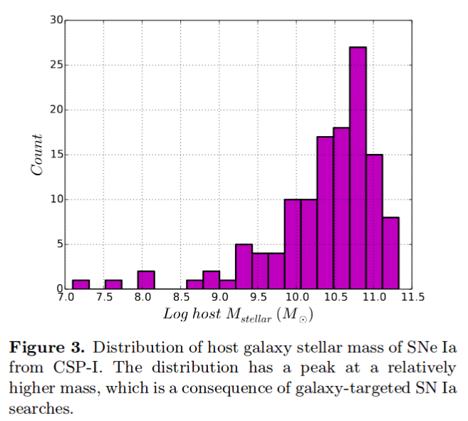
在单个波段，发现更大质量星系的Ia型SN会更明亮，with luminosity offsets ranging between −0.07±0.03 mag to −0.15±0.04 mag after light-curve standardization(correcting for the luminosity-decline rate relation).
Ia型 SN 哈勃残差-宿主星系质量的相关性在所有 波段都是负值，变化范围为 −0.029±0.029 mag/dex to −0.093±0.031 mag/dex，这表明更大质量星系的Ia型SN比预期的更亮（由于斜率是负数，质量越大即哈勃残差绝对值越大，即实际越亮）。
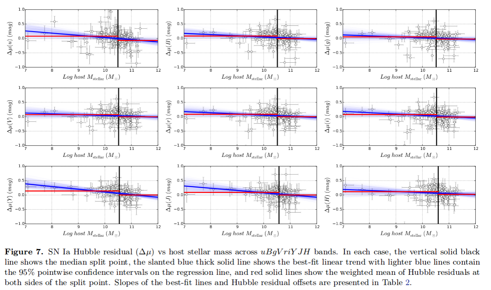
从光学到近红外波段上观测的相关性近似不变，表明尘埃在观测到的luminosity offset--host mass correlation中没有显著影响。
测量了Ia型 SNe 距离它们宿主星系中心的投影距离，发现在10kpc以上爆发的Ia SN的各波段哈勃残差的弥散要小30%到50%，表明这部分SN是一个更均匀的Ia SN 的子集。宿主星系的尘埃，邻近Ia SN的peculiar velocity (refers to the motion of an object relative to a Galactic rest fram)，都可能导致这样的结果。
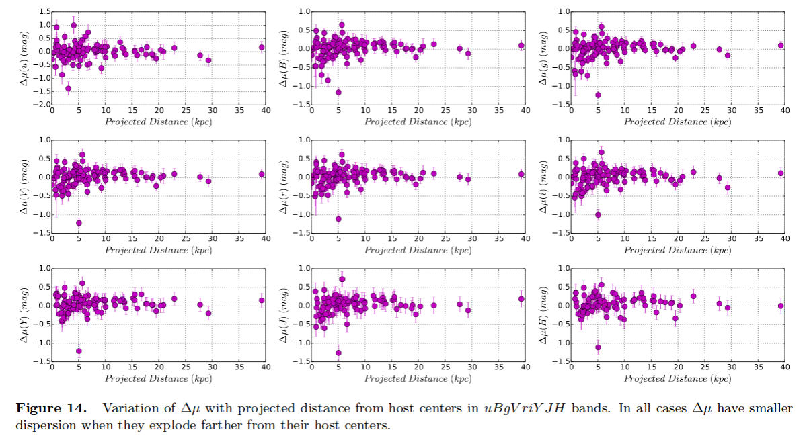
另外，10kpc以上 Ia SNe 的 color excesses 普遍低于10kpc以内的，but there is also a diminishing trend of the dispersion as we exclude nearby events.
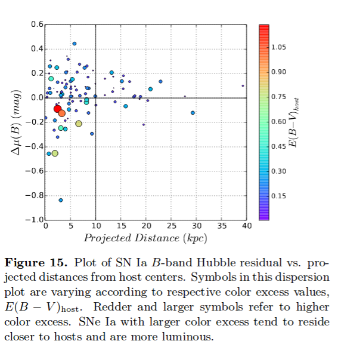
如果按照宿主形态类型把Ia SNe 进行分组，没有发现 Ia SNe 平均光度有显著的变化。
https://arxiv.org/abs/2008.07070
Athours: Yudai Suwa (Kyoto Sangyo U. & YITP), Akira Harada (ICRR), Ken'ichiro Nakazato (Kyushu U.), Kohsuke Sumiyoshi (NIT, Numazu College)
Comments: 12 pages, 1 figure, 1 table
Neutrino is a guaranteed signal from supernova explosions in the Milky Way and is the most valuable messenger that can provide us with information about the deepest part of supernovae. In particular, neutrinos will provide us with physical quantities, such as the radius and mass of protoneutron stars (PNS), which are the central engine of supernovae. It requires a theoretical model that connects observables such as neutrino luminosity and average energy with physical quantities. Here we show analytic solutions for the neutrino-light curve derived from the neutrino radiation transport equation by employing the diffusion approximation and the analytic density solution of the hydrostatic equation for the PNS. The neutrino luminosity and the average energy as functions of time are explicitly presented, with dependence on PNS mass, radius, the total energy of neutrinos, surface density, and opacity. The analytic solutions provide good representations of the numerical models from a few seconds after the explosion and let our rough estimate of these physical quantities to be made from observational data.
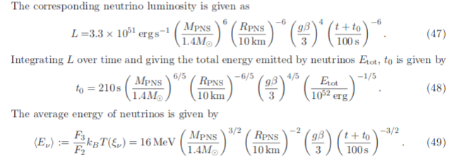
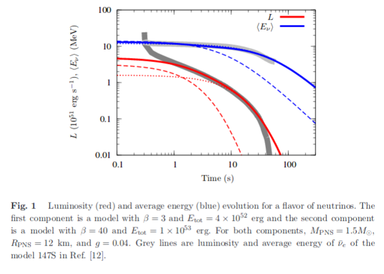
https://arxiv.org/abs/2008.06515
Authors: L. Tartaglia, D. J. Sand, J. H. Groh et al.
Comments: 24 pages (20+Appendices), 16 figures, 4 tables, submitted to ApJ
We present high-cadence, comprehensive data on the nearby (D≃33Mpc) Type II SN 2017ahn, discovered within ∼1 day of explosion, from the very early phases after explosion to the nebular phase. The observables of SN 2017ahn show a significant evolution over the ≃470d of our follow-up campaign, first showing prominent, narrow Balmer lines and other high-ionization features purely in emission (i.e. flash spectroscopy features), which progressively fade and lead to a spectroscopic evolution similar to that of more canonical Type II supernovae. Over the same period, the decline of the light curves in all bands is fast, resembling the photometric evolution of linearly declining H-rich core-collapse supernovae. The modeling of the light curves and early flash spectra suggest a complex circumstellar medium surrounding the progenitor star at the time of explosion, with a first dense shell produced during the very late stages of its evolution being swept up by the rapidly expanding ejecta within the first ∼6d of the supernova evolution, while signatures of interaction are observed also at later phases. Hydrodynamical models support the scenario in which linearly declining Type II supernovae are predicted to arise from massive yellow super/hyper giants depleted of most of their hydrogen layers.
报道了对一颗邻近Type II SN 2017ahn的长期跟踪观测。从爆后1天内到星云阶段，一共约470天。
观测上表现出明显的演化行为，首先是有显著的窄Balmer线系以及其它的高电离度的发射特征（如耀发光谱特征），约一周后逐渐衰减并与大多数典型II型超新星的光谱演化相似。
在同一阶段，所有波段的光变曲线的衰减都很快，与线性衰减的H-rich核塌缩超新星的光变相似。
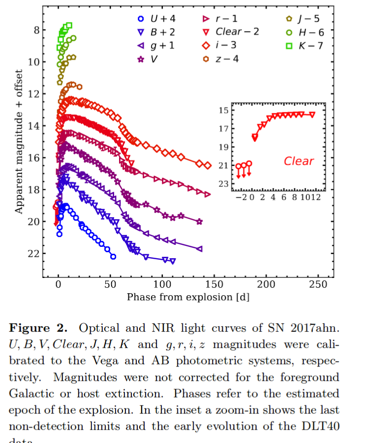
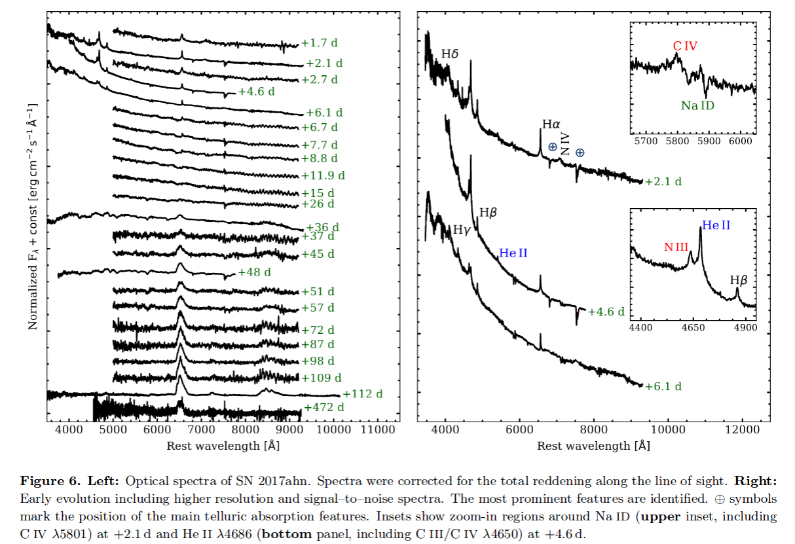
对光变曲线和早期耀发光谱的模型拟合表明爆发时前身星周围的介质比较复杂，在约6天内，密度大的壳层被后面迅速扩张的抛射物扫过（with a first dense shell produced during the very late stages of its evolution being swept up by the rapidly expanding ejecta within the first ∼6d of the supernova evolution），同时在晚期也观测到了相互作用的迹象。
流体动力学模型支持线性衰减的II型超新星来自于耗尽大部分氢层的yellow super/hyper giants。
https://arxiv.org/abs/2008.03461
Authors: M. Cruces, L. G. Spitler, P. Scholz et al.
Since the discovery of repetition it has been clear that the detections of fast radio burst (FRB) 121102 are clustered. Recently, it was argued that it is periodic, raising the question of whether the clustering reflected a not-yet-defined periodicity. We performed an extensive multi-wavelength campaign with Effelsberg, Green Bank telescope and the Arecibo observatory to shadow the Gran Telescope Canaria (optical), NuSTAR (X-ray) and INTEGRAL (gamma-ray). We detected 36 bursts with Effelsberg, one with a pulse width of 39ms. We tested the periodicity hypothesis using 165-hr of Effelsberg, and find a periodicity of 161±5 days. We predict the source to be active from 2020-07-09 to 2020-10-14 and, posteriorly, from 2020-12-17 to 2021-03-24. With the bursts detected, we compare the waiting times between consecutive bursts with a Weibull distribution with shape parameter k<1, and a Poissonian distribution. We conclude that the strong clustering was indeed a consequence of a periodic activity and show that if few events of millisecond scale separation are excluded, the sample agrees with a Poissonian distribution. We model the bursts cumulative energy distribution, with energies from ~ erg, and find that it is well described by a power-law with slope of γ=−1.1±0.2. We exclude a time changing slope to reconcile the discrepancies between the published values and propose that a single power-law might not fit the data over many orders of magnitude. With one burst detected during simultaneous NuSTAR observations, we place a 5-σ upper limit of erg on the 3−79 keV energy of an X-ray burst counterpart.
本文讨论了FRB 121102 的周期性，爆发时间间隔和能量分布的情况。
对于FRB 121102的探测是簇集的（clustered）。这些簇集的爆发是否反映了还未被定义的周期性？
作者利用Effelsberg（17年9月到20年6月）、Green Bank和Arecibo进行了长期的多波段观测to shadow the Gran Telescope Canaria (optical), NuSTAR (X-ray) and INTEGRAL (gamma-ray).
Effelsberg探测到了36个爆，其中一个的脉冲宽度为39ms。作者对165小时的Effelsberg观测数据进行了周期性检验，发现161±5天的周期性行为，预测此源在2020-07-09 to 2020-10-14为活跃期，下一个活跃期为2020-12-17 to 2021-03-24。
作者把这些连续探测间等待时间与形状参数k<1的韦伯分布以及泊松分布比较，发现强簇集性的确是周期活动的结果，而且如果忽略少量毫秒级别的时间间隔，样本就呈现一个泊松分布。
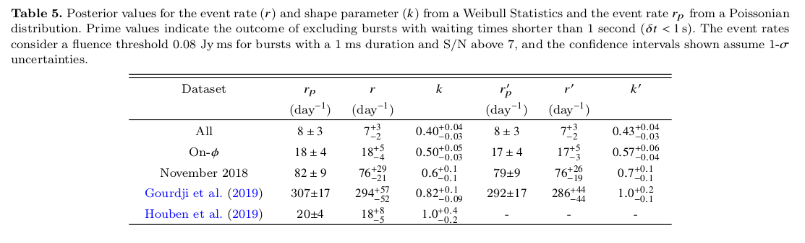
作者在拟合了~ erg能段的爆发累计能量分布，发现其较好符合斜率γ=−1.1±0.2的幂率。
有一个爆同时被NuSTAR探测到，给出了X-射线对应体在3−79 keV 区间内的5-σ能量上限为 erg
https://arxiv.org/abs/2004.10406
Authors: Anna Y. Q. Ho, S. R. Kulkarni, Daniel A. Perley et al.
Commetns: Accepted to ApJ. 39 pages, 17 figures. Comments welcome
We present optical, radio, and X-ray observations of SN2020bvc (=ASASSN20bs; ZTF20aalxlis), a nearby (z=0.0252; d=114 Mpc) broad-lined (BL) Type Ic supernova (SN). Our observations show that SN2020bvc shares several properties in common with the Ic-BL SN2006aj, which was associated with the low-luminosity gamma-ray burst (LLGRB) 060218. First, the 10 GHz radio light curve is on the faint end of LLGRB-SNe (): we model our VLA observations (spanning 13-43 d) as synchrotron emission from a mildly relativistic (v≳0.3c) forward shock. Second, with Swift and Chandra we detect X-ray emission () that is not naturally explained as inverse Compton emission or as part of the same synchrotron spectrum as the radio emission. Third, high-cadence (6×/night) data from the Zwicky Transient Facility (ZTF) shows a double-peaked optical light curve, the first peak from shock-cooling emission from extended low-mass material (mass at radius ) and the second peak from the radioactive decay of Ni-56. SN2020bvc is the first confirmed double-peaked Ic-BL SN discovered without a GRB trigger, so it is noteworthy that it shows X-ray and radio emission similar to LLGRB-SNe: this is consistent with models in which the same mechanism produces both the LLGRB and the shock-cooling emission. For four of the five other nearby (z≲0.05) Ic-BL SNe with ZTF high-cadence data, we rule out a first peak like that seen in SN2006aj and SN2020bvc, i.e. that lasts ≈1d and reaches a peak luminosity M≈−18. X-ray and radio follow-up observations of future such events will establish whether double-peaked optical light curves are indeed predictive of LLGRB-like X-ray and radio emission.
报道了对一个邻近（z=0.0252; d=114 Mpc）的宽线Ic型超新星 SN2020bvc的光学，射电和X射线观测。观测显示SN2020bvc与另一个Ic-BL SN2006aj有一些相似的性质，而后者与低光度GRB060218成协。
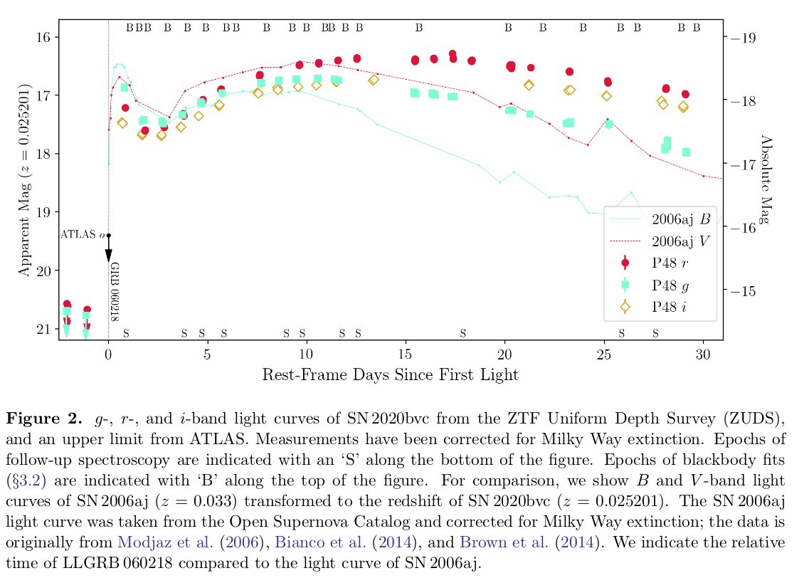
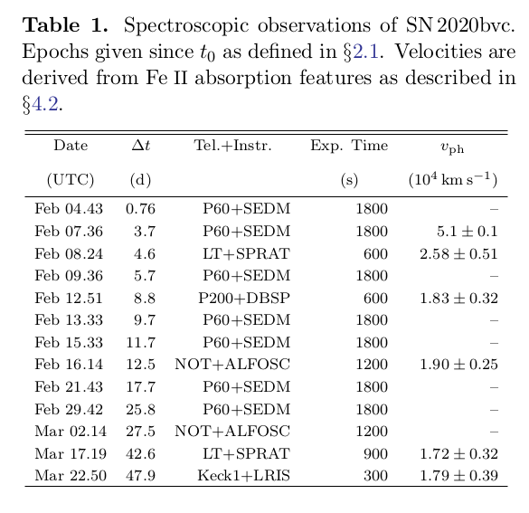
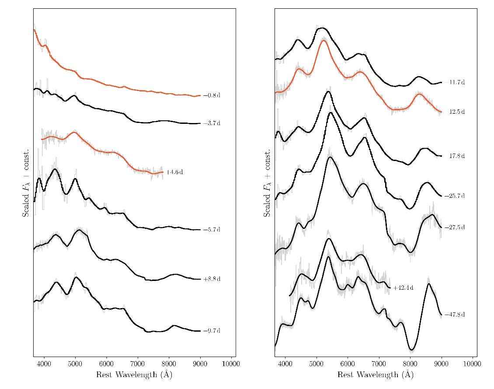
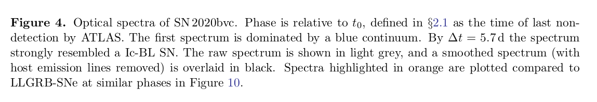
首先，10GHz的射电光变曲线在LLGRB-SNe中处于弱端（），采用来自轻相对论性前向激波（v≳0.3c）的同步辐射情景来拟合VLA观测（14-43d）。
其次，使用和探测的X射线辐射（）用逆康普顿散射或是用同步辐射都不能很好的解释观测（that is not naturally explained as inverse Compton emission or as part of the same synchrotron spectrum as the radio emission.），可能是多成分的辐射。
第三，高节奏（6x/night）的ZTF观测呈现了一个双峰的光变曲线，第一个峰来自延展的低质量物质 (mass at radius )的激波冷却（shock-cooling ），第二个峰来自Ni-56的放射性衰变。
SN2020bvc是第一个被证实的没有探测到GRB的双峰Ic-BL SN，而且它展示出了与LLGRB-SNe相似的X射线和射电辐射：这符合LLGRB和激波冷却辐射产生自相同机制的模型是符合的。
在另外5个ZTF观测的邻近（z≲0.05）的Ic-BL SNe中，4个SN没有类似于SN2006aj和SN2020bvc第一个峰（持续1天，峰值达到M=-18）的峰。
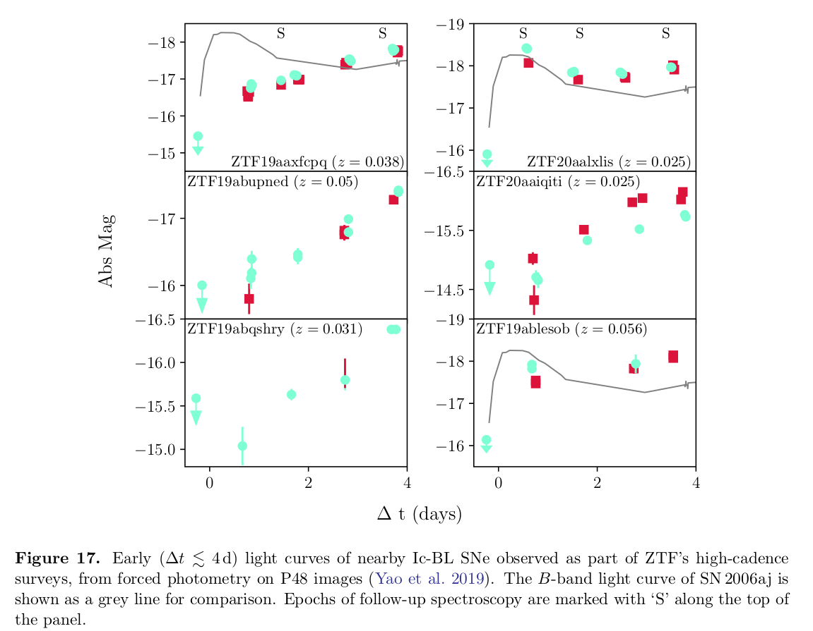
对未来这类事件的X射线和射电的跟踪观测将有助于确定双峰光学光变曲线是否能预测类LLGRB的X射线和射电辐射。
https://arxiv.org/abs/2008.07601
Authors: Luc Dessart, Sung-Chul Yoon, David R. Aguilera-Dena, and Norbert Lange
Comments: Accepted for publication in A&A
Much difficulty has so far prevented the emergence of a consistent scenario for the origin of Type Ib and Ic supernovae (SNe). Either the SN rates, or the ejecta masses and composition were in tension with inferred properties from observations. Here, we follow a heuristic approach by examining the fate of helium stars in the mass range 4 to 12 Msun, which presumably form in interacting binaries. The helium stars are evolved using stellar wind mass loss rates that agree with observations, and which reproduce the observed luminosity range of galactic WR stars, leading to stellar masses at core collapse in the range 3 to 5.5 Msun. We then explode these models adopting an explosion energy proportional to the ejecta mass, roughly consistent with theoretical predictions. We impose a fixed 56Ni mass and strong mixing. The SN radiation from 3 to 100 d is computed self-consistently starting from the input stellar models using the time-dependent non-local thermodynamic equilibrium radiative-transfer code CMFGEN. By design, our fiducial models yield very similar light curves, with a rise time of about 20 d and a peak luminosity of ~ $10^{42.2}erg/s, in line with representative SNe Ibc. The less massive progenitors retain a He-rich envelope and reproduce the color, line widths, and line strengths of a representative sample of SNe Ib, while stellar winds remove most of the helium in the more massive progenitors, whose spectra match typical SNe Ic in detail. The transition between the predicted Ib-like and Ic-like spectra is continuous, but it is sharp, such that the resulting models essentially form a dichotomy. Further models computed with varying explosion energy,56Ni mass, and long-term power injection from the remnant show that a moderate variation of these parameters can reproduce much of the diversity of SNe Ibc. We conclude that stars stripped by a binary companion can account for the vast majority of ordinary Type Ib and Ic SNe, and that stellar wind mass loss is the key to remove the helium envelope in the progenitors of SNe Ic
https://arxiv.org/abs/2008.07934
Authors: Elena A. Balakina, Maria V. Pruzhinskaya, ... Xiaofeng Wang, Danfeng Xiang, Han Lin et al.
Comments: 18 pages, 13 figures
In this work we present the photometric and spectroscopic observations of Type IIb Supernova 2017gpn. This supernova was discovered in the error-box of LIGO/Virgo G299232 gravitational-wave event. We obtained the light curves in B and R passbands and modelled them numerically using the one-dimensional radiation hydrocode STELLA. The best-fit model has the following parameters: the pre-SN star mass and the radius are 3.5 Msun and 50 Rsun, respectively; the explosion energy is ; the mass of radioactive nickel is , which is totally mixed through the ejecta, the mass of the hydrogen envelope 0.06 Msun. Moreover, SN 2017gpn is a confirmed SN IIb that is located at the farthest distance from the center of its host galaxy NGC 1343 (i.e. the projected distance is about 21 kpc). This challenges the scenario of the origin of Type IIb Supernovae from massive stars.
https://arxiv.org/abs/2008.08091
Authors: Michał J. Michałowski, Christina Thöne, Antonio de Ugarte Postigo et al.
Comments: Astronomy & Astrophysics, in press, 8 pages, 3 figures, 1 table
Context. Galaxies that hosted many core-collapse supernova (SN) explosions can be used to study the conditions necessary for the formation of massive stars. NGC 2770 was dubbed an SN factory because it hosted four core-collapse SNe in 20 years (three type Ib and one type IIn). Its star formation rate (SFR) was reported to not be enhanced and, therefore, not compatible with such a high SN rate.
Aims. We aim to explain the high SN rate of NGC 2770.
Methods. We used archival HI line data for NGC 2770 and reinterpreted the Hα and optical continuum data.
Results.Even though the continuum-based SFR indicators do not yield high values, the dust-corrected Hα luminosity implies a high SFR, consistent with the high SN rate. Such a disparity between the SFR estimators is an indication of recently enhanced starformation activity because the continuum indicators trace long timescales of the order of 100 Myr, unlike the line indicators, which trace timescales of the order of 10 Myr. Hence, the unique feature of NGC 2770 compared to other galaxies is the fact that it was observed very shortly after the enhancement of the SFR. It also has high dust extinction,E(B−V) above 1 mag. We provide support for the hypothesis that the increased SFR in NGC 2770 is due to the interaction with its companion galaxies. We report an HI bridge between NGC 2770 and its closest companion and the existence of a total of four companions within 100 kpc (one identified for the first time). There are no clear HI concentrations close to the positions of SNe in NGC 2770 such as those detected for hosts of gamma-ray bursts (GRBs) and broad-lined SNe type Ic (IcBL).This suggests that the progenitors of type Ib SNe are not born out of recently accreted atomic gas, as was suggested for GRB and IcBL SN progenitors.
https://arxiv.org/abs/2008.08593